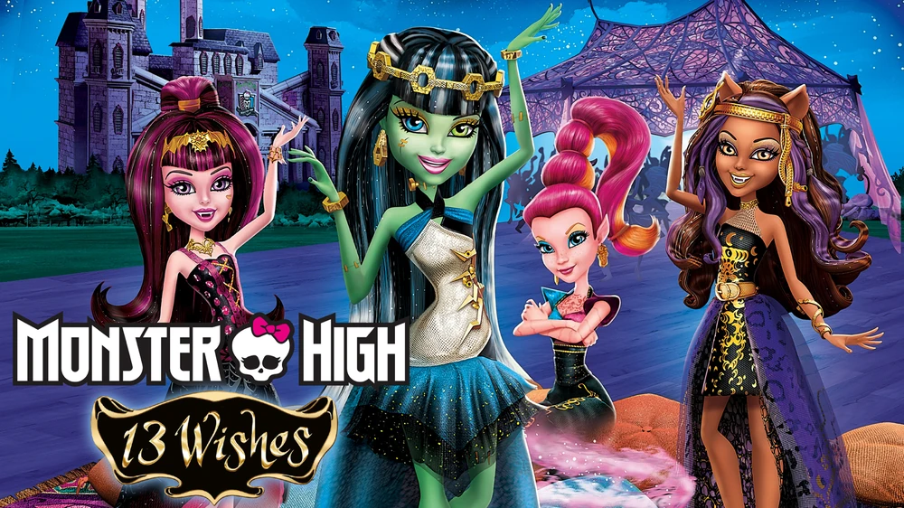
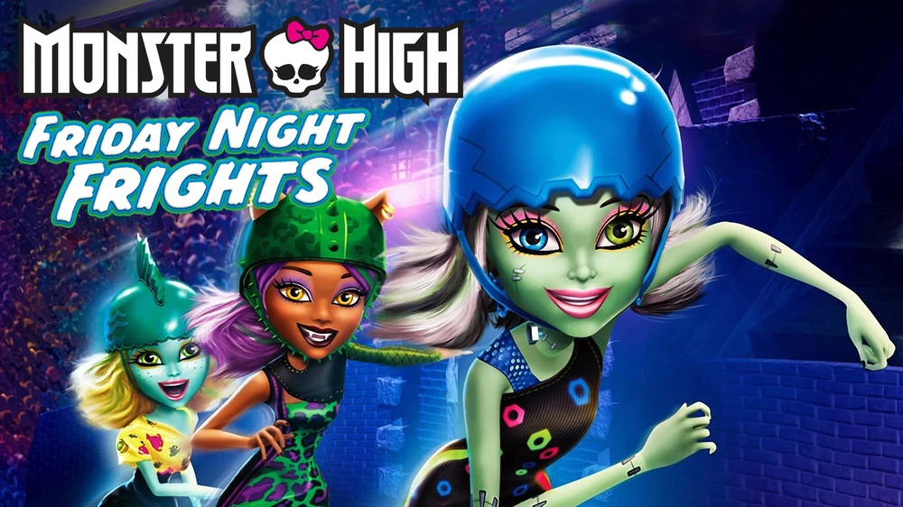
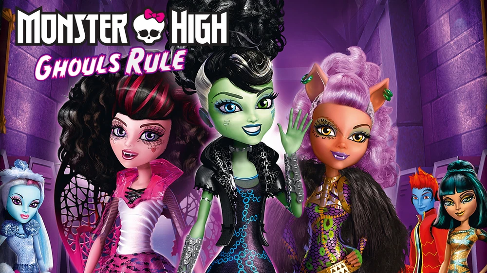

Shows
Movies
Monster High: New Ghoul at School (2013) Frankie Stein starts her first week at Monster High and learns to embrace her unique identity. Monster High: Fright On! (2014) The students of Monster High face challenges when they merge with other monster schools, leading to social tensions. Monster High: Why Do Ghouls Fall in Love? (2014) Draculaura's 1600th birthday brings romantic complications as her ex-boyfriend returns. Monster High: Escape from Skull Shores (2013) Lagoona Blue and her friends find themselves shipwrecked on a mysterious island during spring break. Monster High: Ghouls Rule! (2012) On her first Halloween, Frankie Stein must unite her classmates against a human school that threatens their safety. Monster High: Friday Night Frights (2014) The ghouls compete in a roller maze challenge to reclaim their school's crest from a rival team. Monster High: Frights, Camera, Action! (2014) The ghouls travel to Scaris, the city of frights, to compete in a fashion competition. Monster High: Haunted (2015) The ghouls discover a ghostly school and must help the spirits find peace. Monster High: Boo York, Boo York (2015) The ghouls visit Boo York City for a big concert and face off against a villainous force. Monster High: Welcome to Monster High (2016) A reboot film that introduces the origins of the Monster High characters with updated animation. Monster High: Electrified (2017) The ghouls explore the world of technology and innovation while facing new challenges. Monster High: The Movie (2022) A live-action musical film that reintroduces the characters and their adventures in a new format.
  